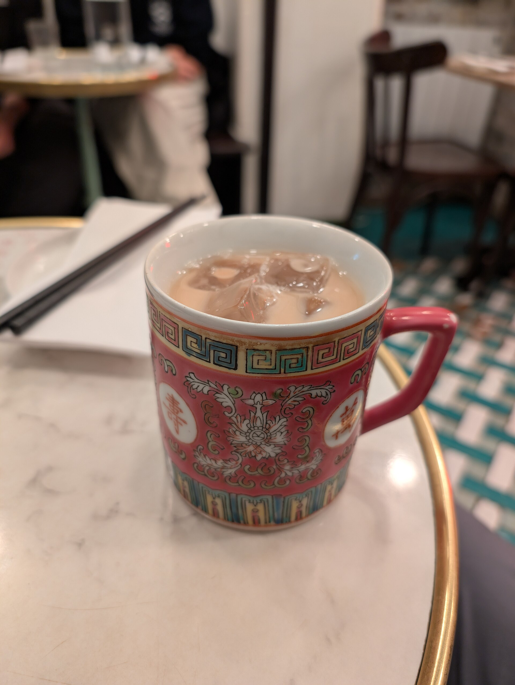
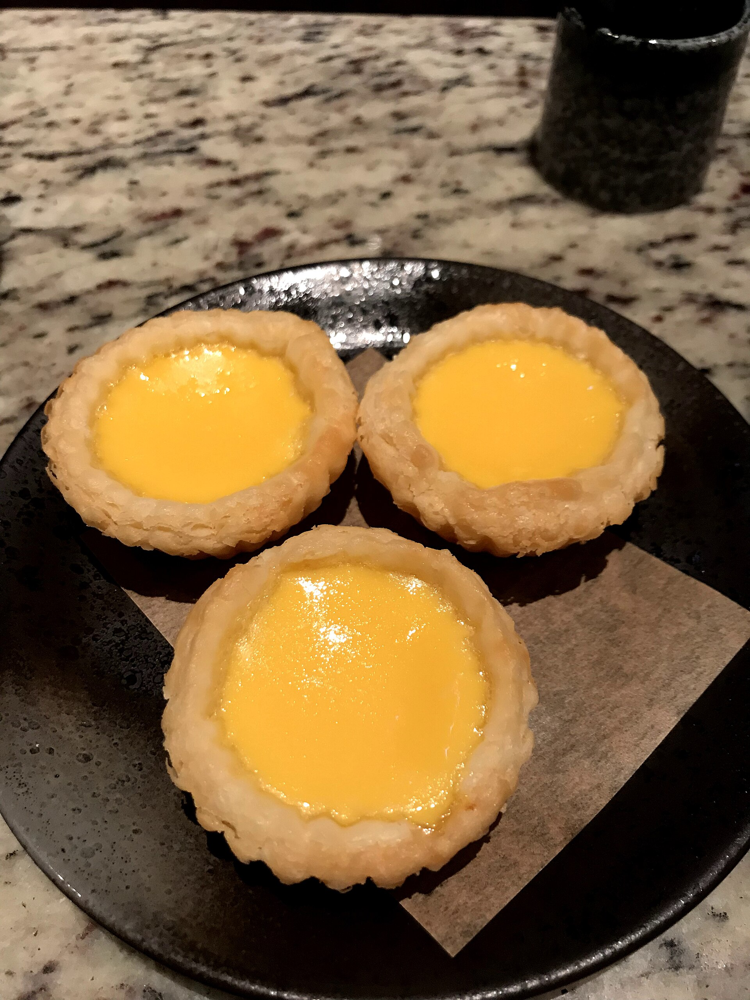
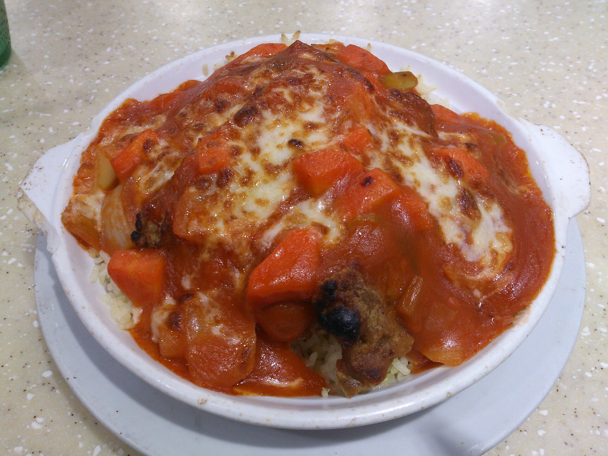
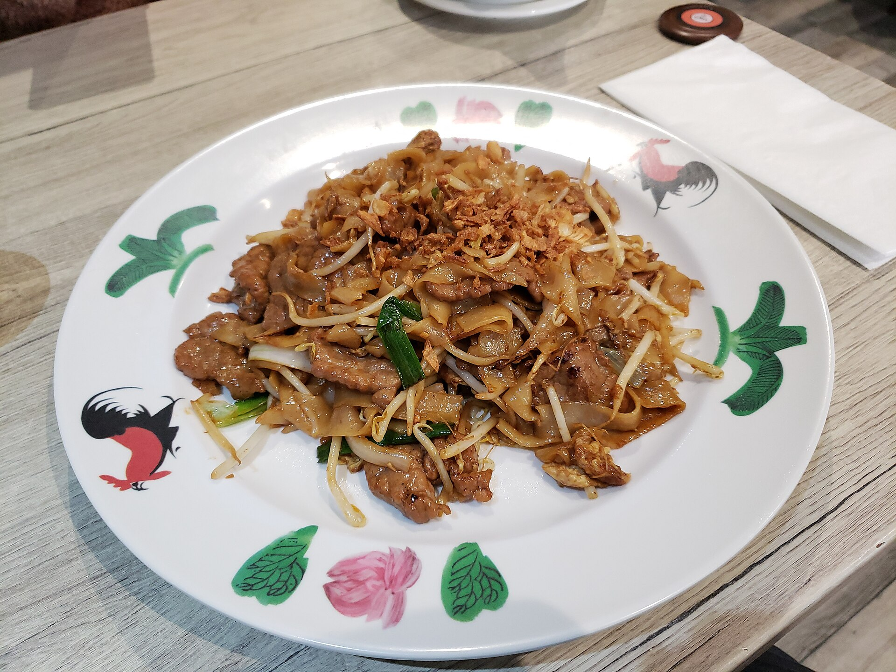
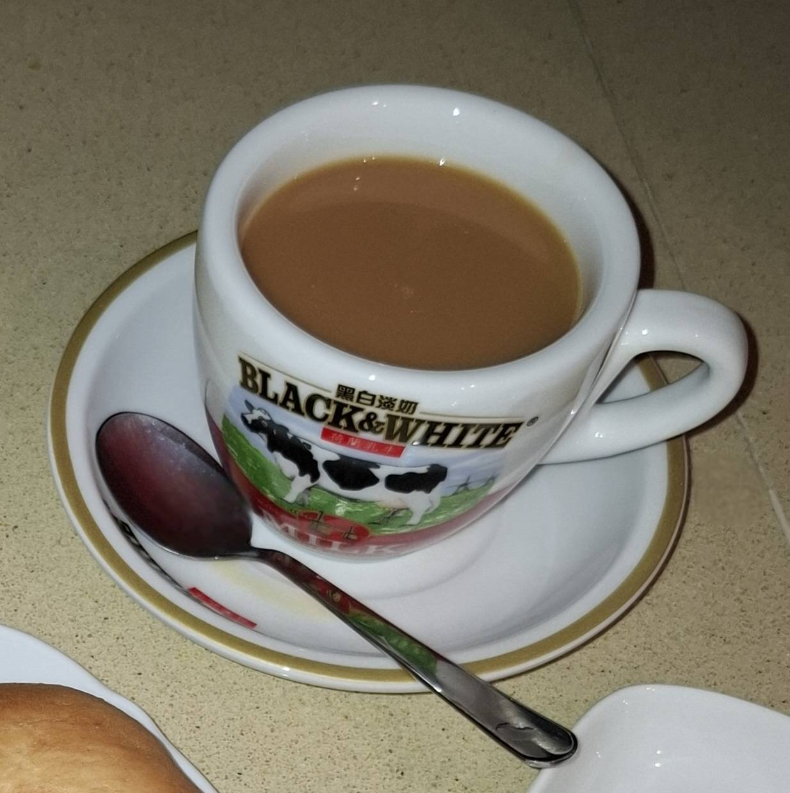
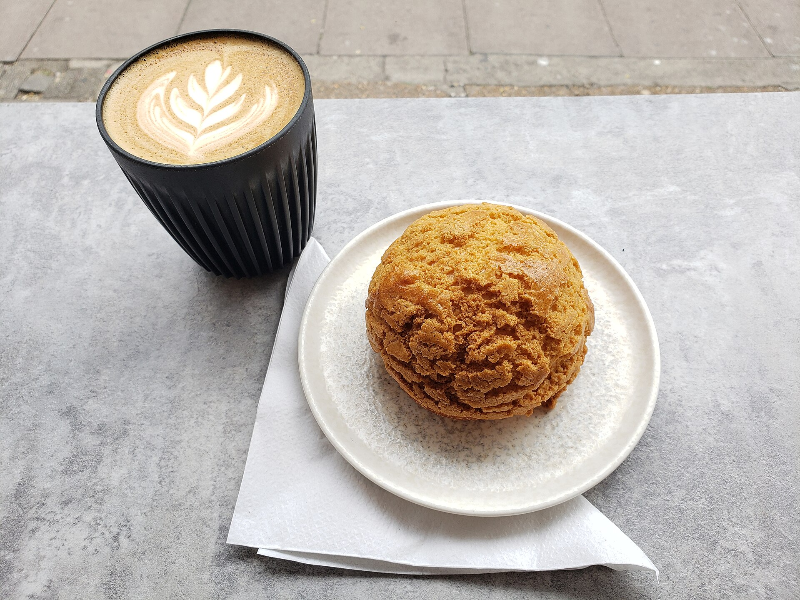
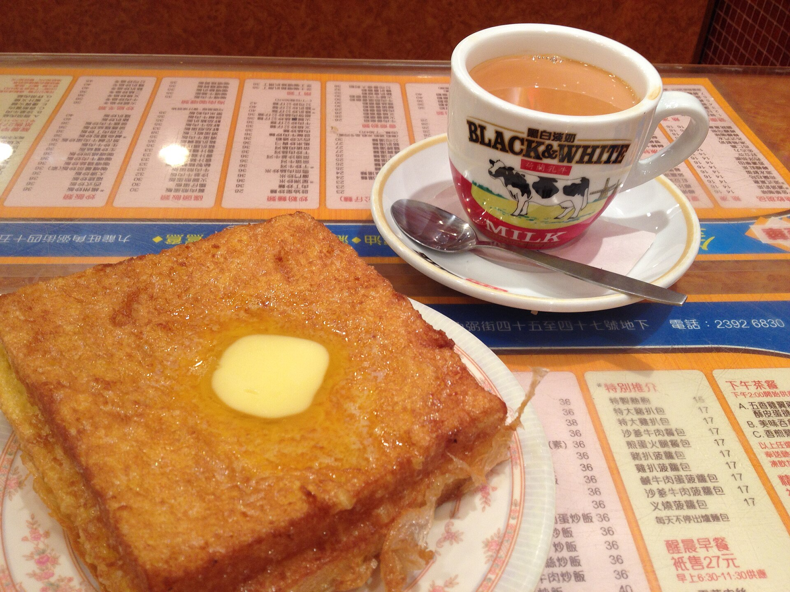
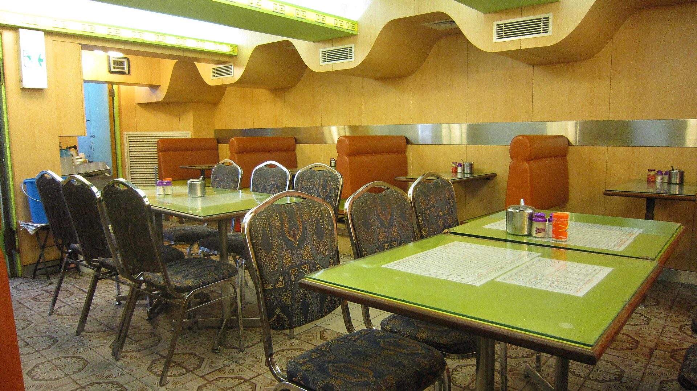

A Hong Kong-style café and bakery on 48th Avenue in Bayside. Milk tea, baked rice and wok noodles, every day. Open daily · 8am–8pm
Iced milk tea · 1 / 4
Order onlineA cha chaan teng is Hong Kong’s everyday café. Cafe 48 brings one to Oakland Gardens: a bakery case up front, a wok going in back, milk tea all day.

Good to knowSteamed rice rolls from 11am to 3pm only. Pickup any time we’re open, delivery within 10 miles, party trays on request.
Black tea and evaporated milk, poured back and forth through a cloth filter until it runs smooth. Hot or iced, it goes with everything on the menu.
Pouring your cup0%
Bakery in the morning, wok dishes by lunch, baked rice when it gets cold out. These are the classics a cha chaan teng is known for.



“Nicestaff,
greatfood,
goodprices.”
A Google review4.1 stars229 reviews on Google